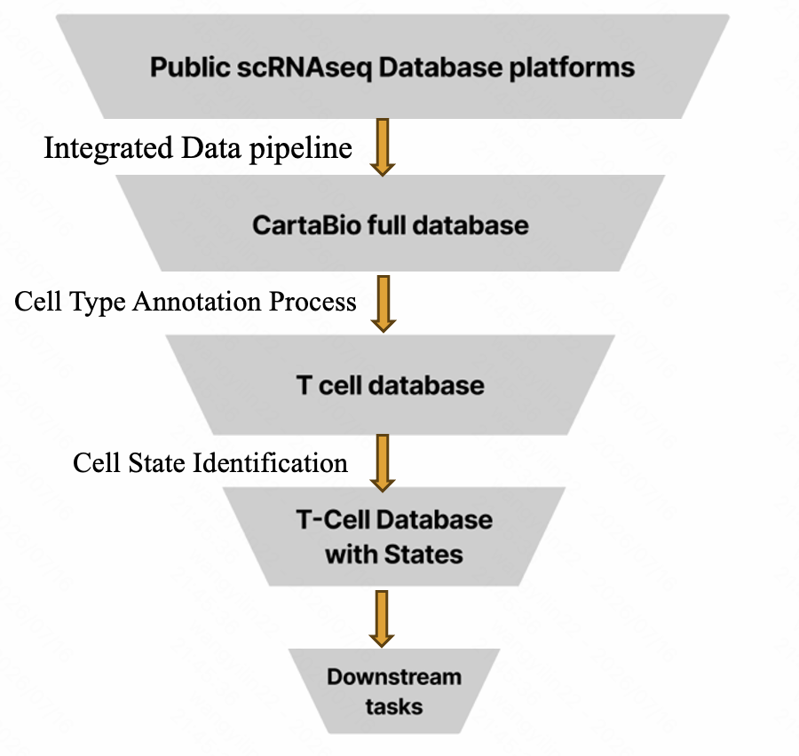
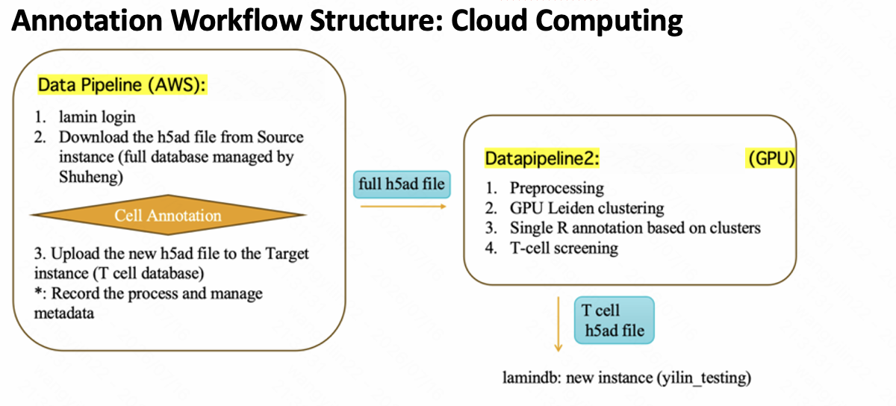

Contributed to a large-scale biological data platform supporting 40K+ experimental datasets and hundreds of millions of single-cell profiles. Designed and implemented automated QC pipelines and data exploration interfaces for researchers navigating complex biological data.
Public single-cell data is distributed across dozens of platforms with inconsistent formats and incompatible annotation standards. No single source is query-ready. The challenge: build a pipeline that ingests, normalizes, and annotates this data at scale — producing a structured, versioned database.
| 01 | Fragmented Sources | Data across dozens of public platforms with inconsistent file formats and metadata schemas |
| 02 | Inconsistent Annotation | Cell types defined differently across datasets — no unified taxonomy or labeling standard |
| 03 | Scale & Compute | 600k+ cells require GPU-accelerated clustering — CPU-only pipelines too slow for iteration |
| 04 | Reproducibility | Ad-hoc scripts produced non-reproducible outputs — needed versioned data lineage tracking |

The pipeline runs across two specialized EC2 instances — separating annotation logic from GPU-heavy clustering. This enables independent scaling and parallel iteration on annotation without re-running compute jobs.
Separating annotation (iterative, CPU-bound) from clustering (batch, GPU-bound) allowed parallel iteration on annotation logic without re-running expensive GPU jobs each time.

Each decision addressed a specific failure mode from earlier iterations — not defaults, but deliberate trade-offs made under real constraints.
| 1 | h5ad as unified format | All sources normalized to h5ad (AnnData) — the de facto standard for single-cell data. Eliminates re-conversion for every downstream tool. |
| 2 | GPU Leiden clustering | GPU-accelerated Leiden algorithm replaces CPU-only clustering — from hours per iteration to minutes, enabling rapid exploration at 600k-cell scale. |
| 3 | Automated cell annotation | Reference-based automated annotation assigns labels via transcriptomic profiles — improving consistency from 80% to 94% while cutting manual review time. |
| 4 | LaminDB for data lineage | LaminDB versions all input/output files and records process metadata — enabling full reproducibility and audit of every pipeline run. |
| 5 | Product interface design | Co-designed internal data exploration tools — structuring how processed data is presented and navigated, improving clarity and usability for researchers across the team. |
The pipeline is itself a product: it has users (researchers), inputs, outputs, failure modes, and measurable performance. Building it required the same systems thinking as product design — just applied at the infrastructure level.
CartaBio is the "Build" phase of the PM cycle —
translating architecture into running infrastructure that a research team depends on.
The 600k-cell T-cell database reduced annotation inconsistency from 20% to 6% error rate and runs end-to-end in hours rather than weeks.